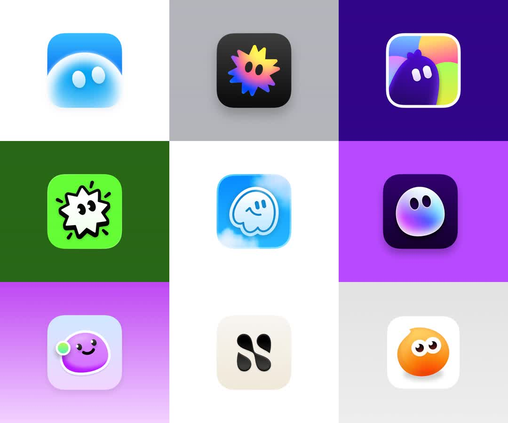

Static 3x3 grid of app icon concepts: nine squircle explorations of one mascot/brand (blue ghost blob, gradient explosion star, purple blob on rainbow, neon green splat, sky scribble, gradient orb, purple smiley with earring, monochrome S-mark, orange owl-face).
Media
Frame-by-frame

image
Nine app-icon renders on tinted backdrop tiles: soft 3D blob mascot variants (glossy gradients, inner glows, drop shadows) and flat graphic variants (splat, scribble, S monogram). Each squircle centered on a solid or gradient tile.
Build prompt
Rebuild this static comp 1:1: a 3x3 grid of app icon concepts - nine squircle explorations of one mascot/brand: blue ghost blob, gradient explosion star, purple blob on rainbow, neon green splat, sky scribble, gradient orb, purple smiley with earring, monochrome S-mark, orange owl-face.
## Integration
Integration: stack-agnostic spec - every value is plain layout/typography/CSS; recreate with your own components and assets.
## Layout
Even 3x3 grid with generous gutters. Each icon a squircle (iOS continuous-corner proportions) centered on its own tinted backdrop tile - tile tint derived from that icon's palette.
## Content & materials
Mix of two families: soft 3D blob mascots (glossy gradients, inner glows, drop shadows) and flat graphic marks (splat, scribble, S monogram). One shared light direction across all nine glossy icons; flat variants stay flat.
## States
None - static presentation grid.
## Don't miss
- The 3D/flat mix is the point of a concept grid - keep both families crisp.
- Consistent silhouette size across the grid; icons optically centered, not mathematically.
- Soft shadows under blob mascots only.